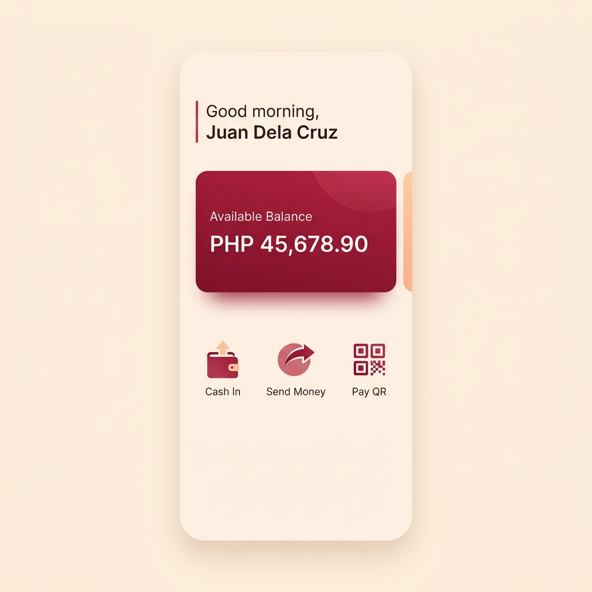

User Manual: Welcome to the New BudolPay
The Ruby & Cream Experience
We've refreshed our look to better serve you. The new BudolPay features a warm Cream foundation for better readability and a vibrant Deep Ruby accent for all your important actions.

The premium Ruby & Cream interface (v2.5.0)
Key Interface Changes
- Unified Navigation: All primary buttons are now themed in Ruby, making it easier to find "Send", "Pay", and "Confirm" actions.
- High Contrast KYC: The verification process now uses the high-contrast Ruby palette, ensuring that instructions are clear and easy to follow.
- Warm Backgrounds: We've moved away from stark whites to a warmer Cream base, reducing eye fatigue during long sessions.
Security & Privacy Updates
Your security remains our top priority. We've introduced enhanced privacy masking for your full name on the login screen, ensuring your identity is protected even in public spaces.